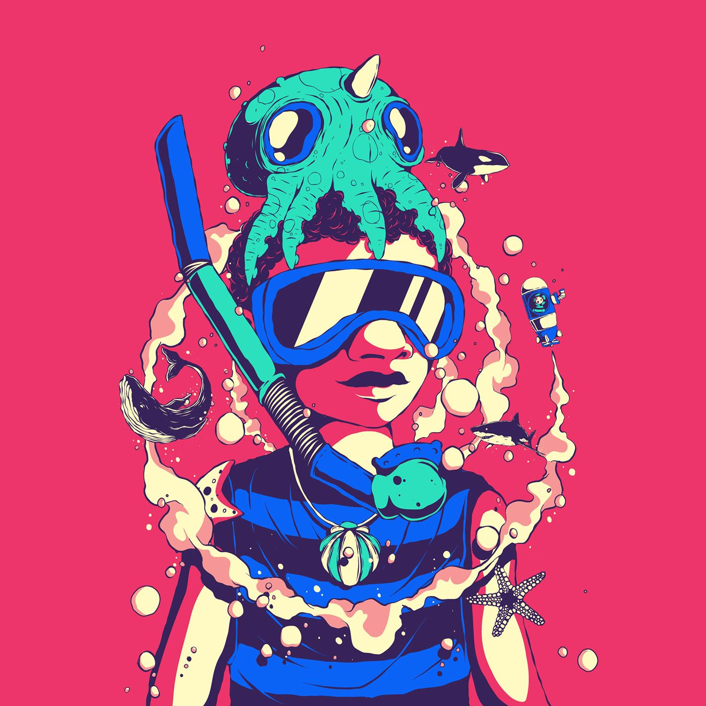

Briony Frater
Hello, my name is Briony Frater and I am 19 years old. I am from the parish of St. Ann and I am a Computer Science major. In my spare time I like to play guitar and piano, draw in Illustrator, design graphics, create 3d scenes, and binge watch American Dad, Criminal Minds and Law and Order. I don't have a favourite moive, series, or song but my favourite colour is blue. I like Web Development because while coding and problem solving is great, Web Dev has a visual aspect combined with coding that I really enjoy. I also enjoy the wide array of options a web developer has in regards to project types: static websites, dynamic websites, web apps, games, etc.
